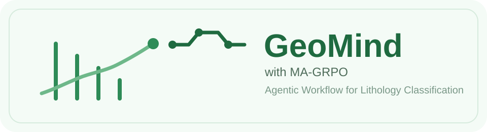
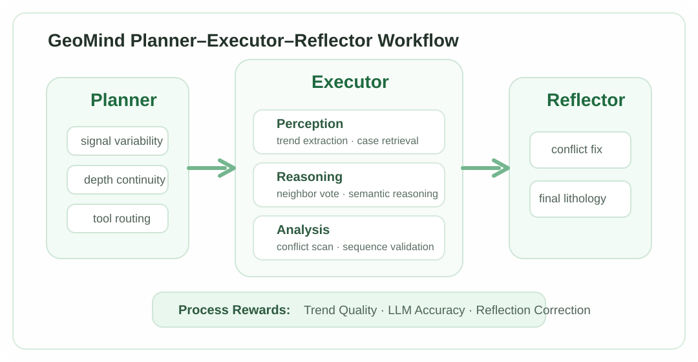
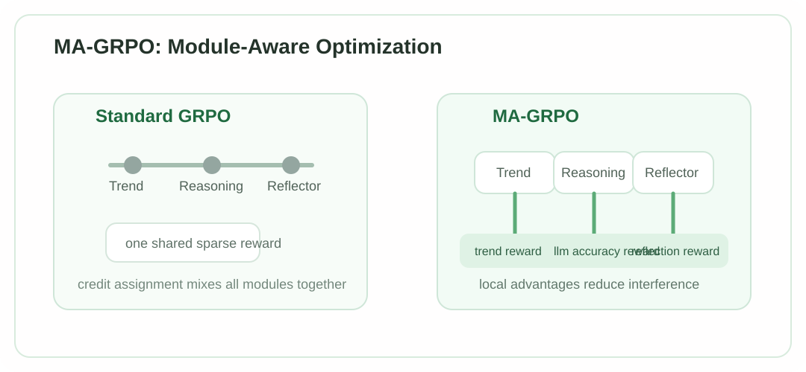
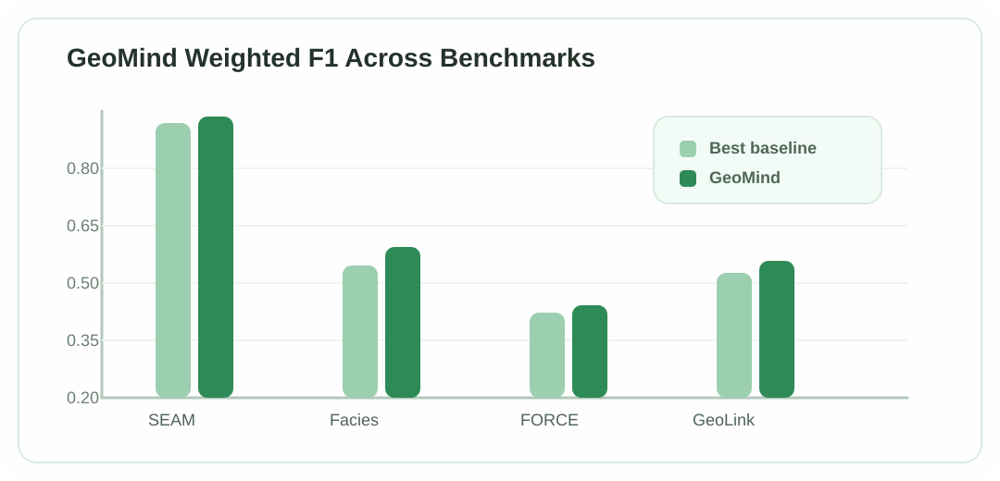

将测井岩性分类从单步判别重构为 Planner-Executor-Reflector 的多步推理流程， 并通过 module-aware GRPO 以趋势质量、LLM 准确性与反思纠错奖励稳定优化中间决策。
中国科学技术大学 · 认知智能全国重点实验室
GeoMind 聚焦的是地球科学中的一个典型时间序列决策任务：根据多通道测井曲线沿深度轴推断岩性标签。 这类数据既有明显的顺序结构，又受噪声、边界模糊和地层连续性约束影响， 因而既不能只依赖局部模式匹配，也不能只依赖泛化模糊的语义推理。
论文的核心思路是把“岩性分类”从静态分类器问题，重新定义为一个工具增强的序列推理问题： GeoMind 负责把数值证据、邻域先验和地层约束组织成透明决策链， MA-GRPO 则负责以模块级目标去优化这条决策链的中间步骤，而不是只在轨迹末尾给一个结果奖励。
论文指出，现有方法的主要问题并不只是准确率不足，而是推理结构与地质决策过程不对齐。 经典数值模型、纯 LLM 推理和单步分类范式各自都有明显短板。
擅长拟合局部数值模式，但容易过拟合局部噪声，对 stratigraphic consistency 缺乏显式约束。
语义推理能力更强，但对多通道连续数值信号不敏感，难以处理边界模糊和细粒度测井变化。
缺少“取证-验证-修正”的中间环节，无法像专家那样调用外部证据、检查冲突并执行自我修正。
GeoMind 采用 Planner–Executor–Reflector 的层级式工作流。 Planner 决定当前窗口需要调用哪些工具；Executor 负责从感知、推理和分析模块收集证据； Reflector 负责在冲突、置信度和地层约束共同作用下输出最终标签与解释。

| 工具 | 作用 |
|---|---|
| Case Retriever | 检索相似历史窗口及其标签，构建局部邻域证据。 |
| Trend Pattern Extractor | 把多变量测井曲线转成自然语言趋势描述，连接数值模式与语义推理。 |
| Neighbor Vote Aggregator | 将邻域样本按相似度加权投票，输出经验先验置信度。 |
| Consensus Conflict Scanner | 比较邻域投票、神经预测和语义推理结果，定位冲突与不确定区间。 |
| Stratigraphic Sequence Validator | 利用地层转移模型检查低概率跳变，过滤不合理的“salt-and-pepper”切换。 |
标准 GRPO 在 agentic workflow 上仍然主要依赖轨迹级 outcome reward， 这会把 Planner、Trend、Reasoning、Reflector 混在同一个稀疏回报里，导致 credit assignment 很差。 MA-GRPO 的关键点是：把不同模块的交互事件拆开，用模块自己的过程奖励做局部 group-relative optimization。

奖励趋势叙述是否真正提升后续分类质量，而不是只追求表面流畅描述。
直接监督语义推理模块的中间分类输出，使 reasoning step 不再只受最终反射结果间接影响。
奖励 Reflector 在候选结果冲突时完成有效纠偏，并惩罚错失本可修正的错误决策。
通过 out-of-fold 预测构造 RL 观察空间，避免 agent 只在训练期看到过于理想化的 base predictor 信号。
sum(len(o_i)) 降到近似 max(len(o_i)) 的模块级形式。论文在 SEAM、Facies、FORCE 和 GeoLink 四个公开数据集上验证 GeoMind。 结果显示，GeoMind 并不是在某一个模型家族上偶然获胜，而是持续优于传统 ML、深度时序模型与 LLM-based baselines。

| 方法 | SEAM | Facies | FORCE | GeoLink |
|---|---|---|---|---|
| XGBoost | 0.8355 | 0.4086 | 0.3612 | 0.3644 |
| InceptionTime | 0.8537 | 0.4062 | 0.3614 | 0.4116 |
| GPT4TS | 0.8425 | 0.4155 | 0.3453 | 0.4130 |
| GeoMind Best | 0.8584 | 0.4431 | 0.3678 | 0.4245 |
| Dataset | # Wells | # Samples | # Classes | Interval |
|---|---|---|---|---|
| SEAM | 5 | 7,092 | 7 | 10m |
| Facies | 7 | 3,164 | 9 | 0.5m |
| FORCE | 11 | 52,766 | 5 | 0.15m |
| GeoLink | 128 | 580,205 | 11 | 0.125m |
如果这个项目页或论文内容对你的研究有帮助，可以引用：
从方法上看，GeoMind 展示了 Agentic Workflow 如何落到真实地球科学时序场景； 从训练上看，MA-GRPO 则把过程奖励和模块级信用分配明确化， 与站点中的 StepPO、Agent-R1 一起构成了从基础算法到垂直应用的连续脉络。